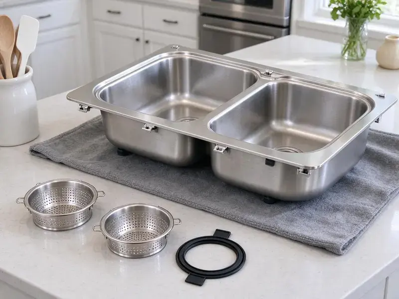

Grease Trap Installation in Lakewood, CA
When you need a new grease trap installed in Lakewood, CA, FKM Plumbing provides skilled service for both commercial and residential properties.
- Free Estimates Available
- Sized to PDI Standards
- Licensed Commercial Plumbers
- Permit and Inspection Support

Get a grease interceptor that passes inspection in Lakewood, CA.
Call FKM Plumbing today for a free estimate on your commercial plumbing project.
Reliable Grease Trap Installation for Businesses in Lakewood, CA
FKM Plumbing helps new restaurant owners and established operators meet local pretreatment requirements. We handle sizing, permits, excavation when needed and final inspection so your kitchen can open on schedule.
Our expertise includes:
- Commercial kitchen grease trap sizing and installation.
- Residential grease interceptor setup for high-volume use.
- Preventive solutions for FOG (fats, oils, greases)

Additional Kitchen Plumbing Services in Lakewood, CA
Our kitchen plumbing services in Lakewood, CA cover sinks, disposals, dishwashers, and grease traps so your kitchen keeps running without backups or leaks.


Customers
Why Choose FKM Plumbing for Grease Trap Installation in Lakewood, CA?
Our commercial crews know what local inspectors look for, from flow control devices to accessible lids. That means fewer delays and a system that stays compliant for years.
- Minimal Downtime, We schedule work after hours or between shifts to keep your kitchen open.
- System Efficiency, Proper sizing and installation mean your grease trap will effectively filter waste, extending the life of your plumbing system.
- Prevent Clogs, A new grease trap reliably separates FOG from wastewater, protecting your drainage system from blockages.
Citywide Coverage
No matter where your commercial kitchen is located in Lakewood, our team is ready to provide prompt and professional grease trap installation services. We understand the local infrastructure and specific requirements for businesses throughout Lakewood.
Experienced Team
Our team of licensed plumbers has extensive experience with commercial kitchen plumbing, specifically grease trap systems. They are trained in the latest installation techniques and safety protocols for businesses in Lakewood.
Safety-First Approach
We take every precaution during the installation process to protect your property and our team. Our plumbers are careful in following all safety protocols and ensuring your new grease trap installation meets or exceeds all Southern California plumbing codes.
Trusted Certified Lakewood Plumbing Services Professionals
At FKM Plumbing, we take pride in providing licensed, certified plumbing services throughout Lakewood, CA. Backed by recognized industry credentials, our experienced plumbers combine technical skill with genuine customer care. Whether it is repair, installation, or maintenance, we follow strict safety and quality standards to deliver lasting results you can trust.
Call Us Now PHCC Plumbing Contractor Recognition
PHCC Plumbing Contractor Recognition Better Business Bureau (BBB) Accreditation
Better Business Bureau (BBB) Accreditation Angi Certified Pro
Angi Certified Pro ISO 9001 Quality Management Certification
ISO 9001 Quality Management CertificationReliable Grease Trap Installation Services in Lakewood, CA
Replacement & Upgrade Services in Lakewood, CA
If your existing grease trap in Lakewood, CA is old, inefficient, or no longer meets current codes, FKM Plumbing provides professional replacement and upgrade services. We can evaluate your current system, recommend modern, more efficient alternatives, and perform a smooth removal and installation. Upgrading your grease trap can greatly improve performance, reduce maintenance needs, and ensure long-term compliance.

Restaurant Grease Trap Compliance in Lakewood, CA
Making sure your restaurant's grease trap system in Lakewood, CA meets all local and state plumbing and environmental codes is crucial. FKM Plumbing is familiar with Southern California regulations concerning FOG discharge and commercial kitchen waste. We make sure that every grease trap installation we perform is fully compliant, helping you avoid penalties and maintain a clean, responsible operation.
Gravity Grease Interceptor Installation in Lakewood, CA
Gravity grease interceptors, or GGI units, are larger, typically located outdoors, and rely on the natural difference in specific gravity between FOG and water. These are common for high-volume commercial kitchens. Our team handles the complex excavation, concrete work, and plumbing connections required for proper GGI installation, maintaining compliance with all local Southern California ordinances for waste management.
Hydro-Mechanical Grease Trap Installation in Lakewood, CA
Hydro-mechanical grease traps, also known as automatic grease removal units, offer an active solution for FOG management in Lakewood, CA. These units often include internal baffles and flow control mechanisms to enhance separation efficiency. We provide expert installation of various hydro-mechanical models, ensuring all electrical and plumbing connections are correctly made for optimal performance and automated FOG removal.
Commercial Grease Trap Installation in Lakewood
For restaurants, cafeterias, and any food service business in Lakewood, a well-functioning grease trap is a must. We specialize in installing commercial-grade grease traps designed to handle high volumes of FOG, making sure your kitchen operates smoothly and compliantly. Our installations are tailored to the specific needs and capacity requirements of your establishment, preventing costly backups and environmental issues.
In-Ground Gravity Interceptor Installation in Lakewood, CA
Larger restaurants and high-volume kitchens often need an outdoor gravity interceptor. These concrete or polyethylene tanks usually range from several hundred to over 1,500 gallons. We excavate, set the tank on a stable base, connect inlet and outlet piping and install manhole risers. Expansive clay and hillside soils can shift over time, putting stress on slab plumbing and separating older sewer joints. We plan excavation equipment around the ground conditions we find on site. A properly installed interceptor can go far longer between pump-outs than an indoor trap.
Automatic Grease Removal Units in Lakewood
Automatic grease removal devices skim grease from the water and collect it in a container your staff empties. Brands like Thermaco Big Dipper are popular in kitchens with limited space and frequent cleaning needs. We install these units with the correct power supply and drain connections. They can reduce the need for frequent pump-outs in smaller kitchens. We explain daily maintenance so your staff keeps the unit running smoothly.

Food Truck Commissary and Ghost Kitchen Traps in Lakewood, CA
Commissary kitchens and ghost kitchens often have several prep stations and heavy dishwashing loads. We design grease trap installs that handle high flow from multiple sinks and dish machines. Each unit is sized for the combined discharge, not just one fixture. We also install cleanouts and sample ports where the city requires them. This keeps shared kitchens compliant for every tenant.
Grease Trap Installation Near Me in Lakewood, CA
Don't let FOG cause a major headache for your commercial kitchen. For reliable grease trap installation near me, call FKM Plumbing today. We offer transparent pricing, professional service, and a commitment to helping Lakewood businesses maintain compliant and functional plumbing systems.
When your business requires professional grease trap installation, you need a reliable local partner. FKM Plumbing is committed to serving the Lakewood community with reliable, code-compliant plumbing solutions. Contact us for a hassle-free installation experience.
FKM Plumbing at a Glance
- Fully licensed plumbing team covering Lakewood, CA
- 24/7 emergency service with same-day scheduling
- Clear written estimates, no hidden fees
- 4.8-star rated by 754+ Southern California customers
Lakewood Map
Lakewood Information
- Population
- 78,135
- Area codes
- 562/714/310
- Service area
- Lakewood and communities within 40 miles
- Nearby
- Bellflower, Norwalk, Long Beach, Downey
For commercial kitchens in Lakewood, CA, proper grease trap installation is crucial for keeping FOG breakdown and odor issues under control. A warm, dry climate is the main factor for plumbing in Southern California, with long irrigation seasons and steady demand on outdoor lines.
Expert Services
Trust our professionals for reliable FKM Plumbing solutions in Lakewood, CA.
Our Specialized Plumbing Services in Lakewood, CA
At FKM Plumbing, we provide a complete range of plumbing services across Lakewood, CA. From leak detection to full system installations, our team ensures fast, precise, and affordable service for both residential and commercial properties. Explore our core services below:


How Our Grease Trap Installation Process Works in Lakewood, CA
Here is how we take your grease trap project from sizing to sign-off.
Request a Quote
Call FKM Plumbing at (213) 871-0701 to discuss your grease trap installation needs. We will gather information about your commercial kitchen and provide a detailed, no-obligation estimate.
On-Site Assessment
Our expert plumbers will visit your Lakewood location to assess your specific requirements, including kitchen layout, wastewater volume, and local code mandates. This confirms proper sizing and placement of the new grease trap.
Professional Installation
We proceed with the installation, carefully connecting the grease trap to your plumbing system and ensuring all seals and connections are secure. Our team conducts thorough testing to confirm proper functionality before completion.
Frequently Asked Questions About Grease Trap Installation in Lakewood
The cost of grease trap installation in Lakewood, CA varies widely based on the type and size of the trap, whether it's an indoor or outdoor unit, and the complexity of the installation. For a small under-sink hydro-mechanical unit, expect to pay between $1,500 and $4,000. Larger outdoor gravity interceptors can range from $7,000 to $20,000 or more, including excavation and concrete work.
FKM Plumbing provides a warranty on our workmanship for all grease trap installations. Additionally, the grease trap unit itself will typically come with a manufacturer's warranty. We will provide you with all warranty details at the time of installation, ensuring peace of mind.
Indoor traps should be close to the fixtures they serve and easy to open for cleaning. Outdoor interceptors are typically placed where a pump truck can reach them without blocking customer traffic.
FKM Plumbing stands behind our work with a solid warranty on all grease trap installations. The specific warranty period will be outlined in your service agreement and usually covers parts and labor for a designated timeframe. Manufacturer warranties also apply to the grease trap unit itself.
The main purpose of a grease trap is to intercept fats, oils, and greases (FOG) from commercial kitchen wastewater before they enter the public sewer system. This prevents pipe blockages, protects municipal infrastructure, and helps businesses comply with environmental regulations.
Determining the correct grease trap size involves calculating your kitchen's wastewater flow rate, fixture count, and peak operating hours. Our experienced plumbers will conduct a complete assessment of your Lakewood business to recommend the appropriate size and type of grease trap that meets local codes and your operational needs.
That depends on local rules and the trap type. Some programs require dish machines to discharge through the interceptor, while others restrict high-temperature discharge into certain units, so we confirm the requirement before we install.
Signs you might need a new grease trap include frequent sewer backups, persistent foul odors coming from drains, slow drainage throughout your kitchen, or if your current unit is visibly corroded or leaking. If your existing trap is old and no longer meets current local codes in Lakewood, an upgrade is also advisable.
What People Are Saying About Our Plumbing Experts?

Laura S.
I scheduled a water heater replacement, and the team made the process smooth and affordable. The new unit works perfectly, and they cleaned up after completing the job.
Water Heater Replacement · Bellflower, CA
Patricia H.
We had a slab leak that two other companies could not find. FKM Plumbing located it in under an hour, explained our options, and the price matched the quote to the dollar.
Slab Leak Repair · Lakewood, CA
James P.
Our commercial plumbing system had a leak under the sink, and FKM Plumbing handled it professionally. The plumbers arrived quickly and restored everything without disruption to our customers.
Commercial Plumbing · Lakewood, CA
Emily R.
I called FKM Plumbing for plumbing repair, and the technician was fast, polite, and thorough. They explained the problem clearly and fixed it the same day. I will definitely hire them again. Highly recommended!
Plumbing Repair · Buena Park, CASofia M.
Two new toilets installed in one visit, no mess left behind, and the tech even adjusted a faucet he noticed was dripping. Fair pricing and really friendly.
Toilet Installation · Buena Park, CA
Daniel K.
A pipe burst at 11 pm and they actually answered. The plumber showed up within the hour, shut everything down, and had us back to normal the next morning. Could not ask for more.
Emergency Plumbing · Compton, CA